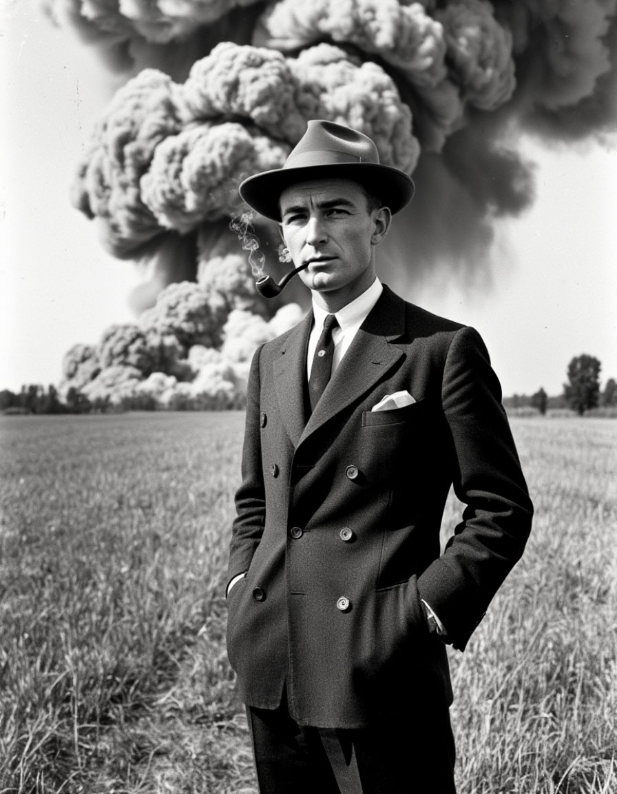
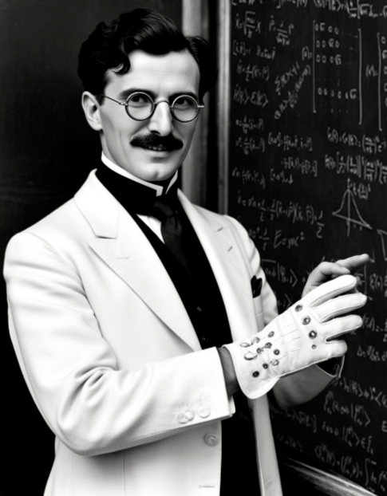
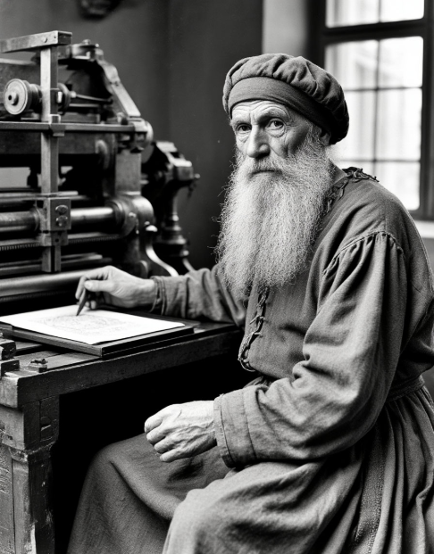
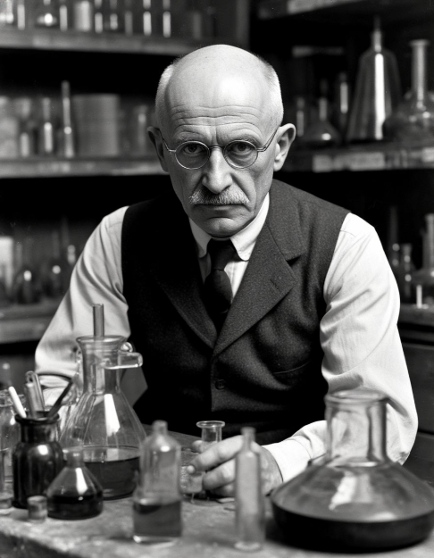

Дж. Роберт Оппенгеймер родился в Нью-Йорке 22 апреля 1904 года в семье еврейских эмигрантов из Германии. Его отец, состоятельный импортёр тканей Джулиус Зелигман Оппенгеймер (1871—1937), эмигрировал в США из Ханау (Германия) в 1888 году. Семья матери — получившей образование в Париже художницы Эллы Оппенгеймер (урождённой Фридман, 1869—1931) — также эмигрировала в США из Германии в 1840-х годах.
9 октября 1941 года, незадолго до вступления США во Вторую мировую войну, президент Франклин Рузвельт одобрил ускоренную программу по созданию атомной бомбы. Это решение стало ответом на растущие опасения, что нацистская Германия может первой разработать ядерное оружие. В мае 1942 года Джеймс Б. Конант, председатель Национального комитета оборонных исследований и бывший преподаватель Оппенгеймера в Гарварде, предложил ему возглавить группу учёных в Беркли, которая занялась бы расчётами в области быстрых нейтронов — ключевого элемента создания атомной бомбы. Оппенгеймер, глубоко обеспокоенный войной в Европе, с энтузиазмом взялся за эту работу. Одним из первых шагов Оппенгеймера стало проведение летней школы по теории ядерного оружия в Беркли. В неё вошли как выдающиеся европейские физики, бежавшие от нацизма, так и его собственные ученики, включая Роберта Сербера, Эмиля Конопинского, Феликса Блоха, Ханса Бете и Эдварда Теллера. Вместе они анализировали ключевые этапы создания бомбы. Вскоре эти исследования переросли в масштабный государственный проект, и Оппенгеймер возглавил Манхэттенский проект.


Никола Тесла родился 10 июля 1856 года в селе Смилян, находившемся тогда в составе Австрийской империи, в семье сербского православного священника. С самого детства он демонстрировал феноменальные интеллектуальные способности — обладал фотографической памятью, знал восемь языков и мог производить в уме сложнейшие математические вычисления. Его уникальное пространственное воображение позволяло мысленно конструировать и тестировать изобретения, не прибегая к чертежам. После блестящего окончания школы в 1873 году и непродолжительной борьбы с холерой, которая едва не стоила ему жизни, в 1875 году Тесла поступил в Высшее техническое училище в Граце. Здесь, изучая электротехнику под руководством профессора Якова Пешля, он впервые задумался о революционной идее использования переменного тока, хотя в то время научное сообщество считало эту концепцию технически неосуществимой.
Настоящее признание пришло к Тесле в 1893 году, когда на Всемирной выставке в Чикаго он продемонстрировал полную безопасность и эффективность своей системы, осветив всю экспозицию с помощью переменного тока. Эта демонстрация окончательно утвердила превосходство его технологии и заложила основу современной электроэнергетики. Величайшим вкладом Николы Теслы в науку стало создание системы переменного тока.
Иоганн Генсфляйш появился на свет в 1398 году в семье майнцкого торговца сукном Генриха Генсфляйша и его супруги Эльзы, урожденной Бейер. Дом Генсфляйшей располагался в престижном квартале у городского собора, где юный Иоганн с детства наблюдал за работой переплетчиков и иллюстраторов рукописных книг. В 1412 году он поступил в городскую латинскую школу при монастыре Св. Виктора, где проявил недюжинные способности к механическим искусствам. После смерти отца в 1420 году четырнадцатилетний Иоганн был отправлен на обучение к нюрнбергскому мастеру-ювелиру Конраду Шпейеру, где за шесть лет освоил тонкости работы с металлами. Именно в Нюрнберге он впервые познакомился с техникой штамповки и начал свои эксперименты по созданию металлических печатных форм.
Последние шестнадцать лет жизни Генсфляйш провел в относительной безвестности, продолжая совершенствовать свои изобретения в маленькой мастерской при местной типографии Кребса. Его дневниковые записи этого периода (хранящиеся ныне в Страсбургском архиве) полны горечи и разочарования. Особенно он переживал из-за смерти жены Катарины в 1460 году и потери единственного сына во время эпидемии чумы 1463 года. Тем не менее, даже в эти трудные годы Генсфляйш создал несколько важных усовершенствований печатного станка, включая систему точной выверки литер и новый состав печатной краски. Умер изобретатель 24 марта 1468 года от водянки и был похоронен на скромном кладбище при церкви Св. Фомы. Лишь в 1928 году при реконструкции старой типографии были случайно обнаружены его личные записи и несколько уникальных оттисков, позволившие по-новому оценить вклад этого незаслуженно забытого новатора в развитие книгопечатания.


Фриц Габер, 9 декабря 1868, Бреслау, королевство Пруссия — 29 января 1934, Базель, Швейцария) — немецкий химик, агрохимик, «отец химического оружия», лауреат Нобелевской премии по химии (1918). Нобелевскую премию Габер получил за вклад в осуществление синтеза аммиака (процесс Габера), необходимого для производства удобрений и взрывчатки. Также, совместно с М аксом Борном он предложил цикл Борна — Габера как метод оценки энергии кристаллической решётки твёрдых веществ, образованных ионными связями. Габера также считают первым учёным, подчинившим научные исследования военным нуждам: он разработал методы применения хлора и других отравляющих газов во время Первой мировой войны, а в дальнейшем участвовал в создании боевых отравляющих веществ (под видом инсектицидов).
Родился в городе Бреслау (Пруссия, ныне Вроцлав, Польша) в одной из старейших в городе хасидских семей. Уже в зрелом возрасте (1892—1894) он отказался от иудаизма и принял христианство. Его отец был известным в городе коммерсантом, мать умерла во время родов. С 1886 по 1891 год Габер учился в Гейдельбергском университете под руководством Роберта Бунзена, в Берлинском университете (ныне имени Гумбольдта) в группе Августа Вильгельма Гоффмана и в техническом колледже Шарлоттенбурга (ныне Берлинский технический университет) под руководством Карла Либермана.